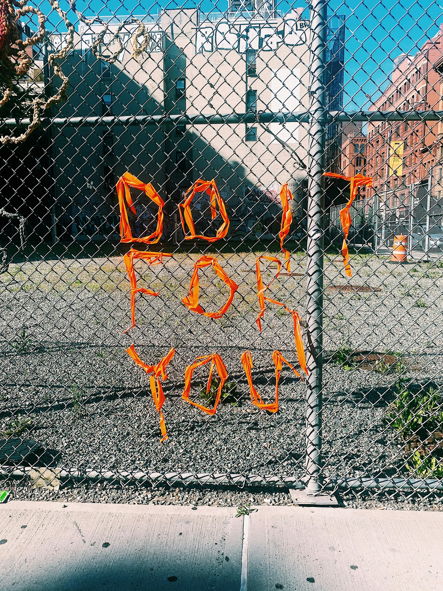
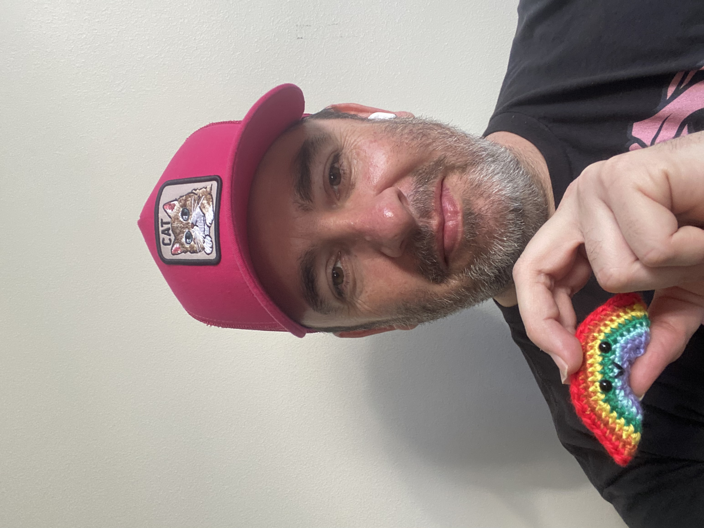
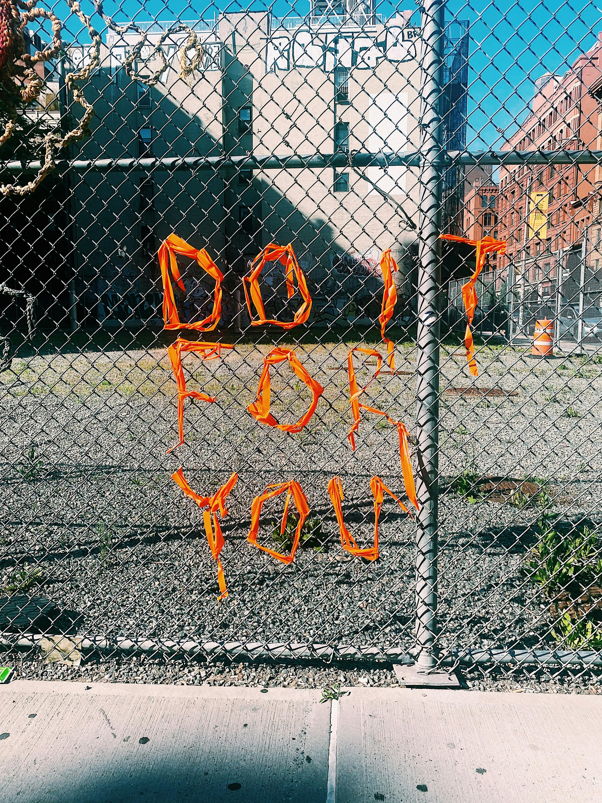
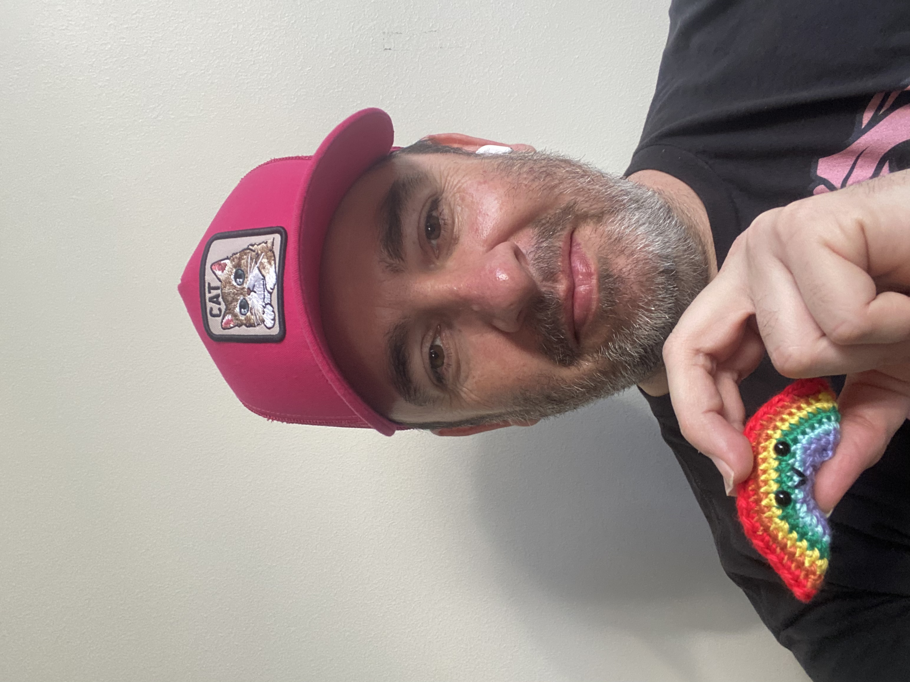
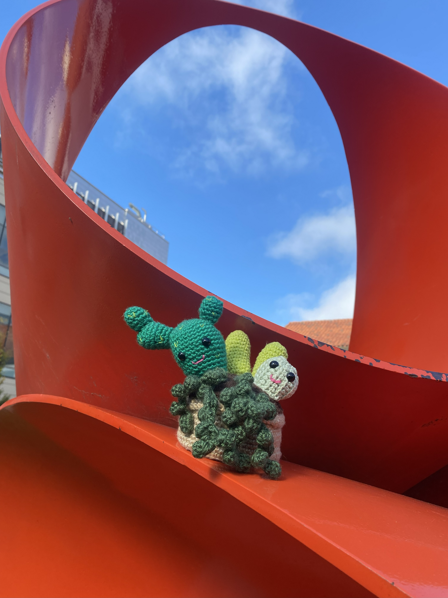

Articles
Hooking and Yarn News, January 1st, 2026
.jpg)
Crochet In Photography
Crochet Photography by Pietro Henricky
Riego de la Branchardière
The photography of Pietro Henricky is reviewed this week by the Mother of Crochet herself, Riego de la Branchardière. Henricky is a fashion photographer who has often worked with crochet artists and celebrates diversity. Henricky's photography strikes a beautiful balance between masculinity and feminity. In addition to taking beautiful fashion photograhy, Henricky is also a producer and film maker and creative Director. He currently lives and works in Fortaleza, Ceará, Brasil. He started taking photographs while spending time with his family, and was excited when he was able to turn his passion into a career. It has always been important to Henricky that he enjoys what he is doing, and he embraces the flaws in his photography and process. He enjoys shooting fashion (and we are excited that in this vein, he often photographs crochet and yarn textiles!) Henricky likes to photograph a variety of subjects, and often tries to tell his own story in his work.Though his fashion photography is amongst his favorite, he also explores other subjects. Personal histories and the effects that we reverberate with are amongst his most common themes in his work currently. The careful development of these ideas can be seen across his work. He is a proponent of artists creating work through a long and thoughtful creative process. He always says "Just get back to your process, making your work." You can see that this principle has guided his work throughout his career. (Read More...)

Celebrity Crochet
Tom Daley, Olympian and Yarn Ambassador
Lavaz McLavaloo
Thomas Robert Daley (born 21 May 1994) is an English retired diver, YouTuber and television personality. He won the silver medal in the men's synchronized 10-metre at the 2024 Olympics, making him the first British diver to win 5 Olympic medals.Lavaz McLavaloo: Tom, how old were you when you learned to knit and crochet? Who taught you? Which one attracted you first?
"I started knitting 5 years ago (March 2020.) It was something I started to learn on a trip to Canada from a YouTube video. I was absolutely awful at first, I couldn't get the hang of it. One of the Australian divers and one of the Russian divers on that trip helped me while we were there and then on the flight home, one of our coaches on the British team gave me some tips and then with a lot of practice I started getting the hang of it. I only started to crochet in August 2020."
Lavaz McLavaloo: Do you prefer knitting or crocheting, or do you love both?
"I honestly love both but for different reasons. I love knitting because I think it looks the best when finished, but I love the fact that with crochet it is so much easier to create and adjust sizes and shapes as you go."
Lavaz McLavaloo: What was your very first project? Can you describe it? (Read More...)

Patterns in Review, Fall Themed Suit
Not Your Average Granny Square
Lena Skvagerson
When I say the following two words, what comes to mind? Granny Squares. Do you think fondly of your time learning to crochet from your dear Granny Gran Gran, making these adorable squares that you can basically construct anything out of? (Think of them as the replicators of yarn.) Or does it make you smell that musty old blanket that was on the basement couch when you were growing up? Perhaps a faint smell of wet dog and microwave french fries? Or maybe it reminds of you of going through your Auntie's stuff before that big garage sale, and the smell of mothballs and cigarettes assault's your nose...
Whatever your association, there are some fabulous new suits this season featuring granny squares fabricated from yarn, as well as the images of granny squares printed as textiles. Granny Gran Gran would be so impressed with where crochet has gone since she was a little fledgling. Gone are the days of shamefully hiding your crochet tuxedo, as yarn has taken a step into the bougie spotlight, as the craft of fame and prosperity.
Take for instance this beautiful seventies fall themed granny square suit. This ensemble includes a jacket, slacks, and a tie, all matching in this fabulous granny square pattern. Did I hear Grany Gran Gran swoon from the grave? Yes, I did. Orange, yellow and brown come together to create the hellish nightmare couch from your dreams... No wait, they actually come together in a beatiful way in this crisp autumn suit straight out your mom's glory days. Think woodstock and hippies meet FASHION!! (Read More...)

Crochet in the Wild
Yarn Bombing: Pictures from Around the World
Roberta Smith
The hills are alive with the sound of crochet, or so the saying goes. Have you ever been moving along through your day, when all of a sudden you spot some little yarn surprise. Its like the elves and fairies have droppeds some yarn magic in your path? Whether it is just a little crochet flower, or a full blown yarn bomed fence or tree, it is always inspiring.
Roberta Smith, acclaimed art reviewer and author, whose work is often featured in the New York Times takes you through some of the yarn bomb artistry from around the world that she finds to be the most inspiring. From buroughs of New York to underground yarn art from Paris, your eyes will be delighted and your fingers inspired by the photography and evidence of beautiful yarn love that is spread through the yarn bombing movement. (Read More...)
About Brochet & Friends
We are for Bro’s, Hookers & Yarn Lovers!
This is for anyone who uses a crochet hook (i.e. A Hooker.) We are yarn enthusiasts, Bros and people who love to challenge stereotypes and get crafty. We love colors, RAINBOWS, fashion, and polka dots! This website is the culmination of a great deal of hooking and organizing. Our mission is to bring love and peace to the world through yarn. We love you, we love crochet, we love Bros who crochet and anyone who loves yarn.
While crocheting out in the world is fun, it is important to be prepared. Have all of your supplies, and also to pay attention to your own safety. Some people may think that you are knitting, but they are ignorant to the art of Crochet!!
There are many easy crochet projects! Pick something like this poncho, or a scarf and get started on your first crochet project.
To crochet bomb, all you need is yarn and a location. You can yarn bomb your mailbox, or the pole for a street sigh, or even an entire bus!
Patterns
cute little amigurumi, to make for your cute little self
| Picture | Description | Materials | Level |
|---|---|---|---|
 |
Pink Bird |
|
Beginner |
 |
Turkey |
|
Advanced |
 |
Bunnies |
|
Intermediate |
 |
Spiders |
|
Beginner |
 |
Chick |
|
Intermediate |
Community
 




This Website
This website is for anyone who uses a crochet hook (i.e. A Hooker.) We are yarn enthusiasts, Bros and people who love to challenge stereotypes and get crafty. We are for Crochet Lovers and Knitting enthusiasts. We also love colors and RAINBOWS and polka dots! This website is for all lovers of yarn and Fun.
This launch of this website is exciting, as it is the culmination of a great deal of hooking and organizing. We are here to amplify the ideas from the greater Brochet community. Only through celebrating the diversity of all the yarn lovers will we be able to reach our mission, bringing love and peace to the world through yarn.
We feature the work of innovative yarn artists who Yarn BOMB the world around them. Our Senior Interviewer Lavaz McLavaloo sat down with Yarn Ambassador (and Olympian) Tom Daley. We also feature the winners of our inaugural Crochet is for TANKS competition. For the fashion lovers we feature the looks from the crochet fashion photography by Pietro Henricky. Try your hand at some of our crochet patterns.
We love you, we love crochet, we love Bros who crochet and anyone who loves yarn. We hope you enjoy our website.
Love,
Brochet & Friends
Intent/Inspiration
Community implies inclusion. Our community is fully inclusive of everyone. All types, abilities, shapes, sizes and colors are welcome here. We are all welcome to express, view, participate, not participate and enjoy. Our audience is our community and vice verse. Our intent is to explore crochet as a topic. Our point of view is slightly fashion, but also slightly crafty. The design intent of this website is to be minimalistic in terms of color palette and design, which should fully support the maximalisism in terms of subject and imagery. There has been a great deal of restraint applied in terms of minimalizing the design so that the subject can step forward. The subject should be at the focus (thank you Bauhaus.) So quickly though this has digressed into a deeper statement about artistic intent, and less about out community.
Do you love cute stuff? Do you like tiny things that fit in your hand? (which is what amigurumi is) Amigurumi, which literally translates to "crocheted or knitted stuffed toy" is the Japanese art of knitting or crocheting small, stuffed yarn creatures. I originally learned to crochet as a child, but hadn't done it in adulthood until the lockdown for the pandemic. My grandmother was good at making things, and I loved the idea that I could create things for my niece and nephew and other friends who are family. Take a peek at our patterns section for pics of things I have made through the years.
Getting Involved
Do you make things with yarn or crafts or fashion or some interection between these things? Do you not make thing with yarn or craft, but you are interested or like viewing yarn and craft stuff? Please take the opportunity to make an account and join our community, where you can post photos, patterns or anything that you desire related to yarn, crafts, arts, rainbows, polka dots, glyphs, amigurumi, swiss style, the bauhaus art movement and/or constructivisim, art, gay pride or hella cute stuff.
Think of the Brochet and Friends community like it is social media, but less technofacisty or evil, and more yarn and inclusion focused. Joining is free, and posting just requirs the creation of the free account (and for the "olds" in the audience, yes we do remember when lamebook and the rest lamies did when they originally launched, but seriously we promise to not be evil and stay connected to our connection to the yarn community through love and rainbows). Gosh these scrolling areas are getting pretty existential and deep, but what else are you supposed to do when the feature is required in a class, and though learning how to add it and move it around and stuff has been useful, for cereals I just mentioned minimalism and bauhaus. This 3rd column is so extra and though I full heartedly have included it in this assignment, if it were in a real design it would be used maybe slightly less.
Join us in our pursuit of yarn and rainbows!

Baby Groot
You can crochet a your own Baby Groot outfit for your youngling, or if you are adept at pattern adaptatation make one for yourself! Weekly Baby Groot Comic also included. See our patterns page.
More Patterns
for your hooking needs
-
 Yeti
Yeti
Intermediate Level -
 Cute Bat
Cute Bat
Beginner Level -
 Killer Tomato
Killer Tomato
Beginner Level -
 A Hoot of an Owl
A Hoot of an Owl
Intermediate -
 Dont have a cow man!
Dont have a cow man!
Advanced -

Planter of Succulents
Advanced

.jpg)